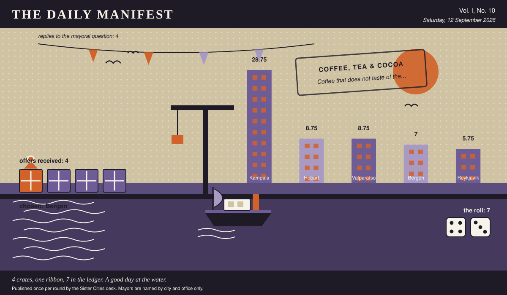

The Daily Manifest
All the news that fits in the hold.
Vol. I, No. 10 · Saturday, 12 September 2026 · Price: unchanged since the first edition, which was also this week
Weather: fog. The ferries are running on confidence alone.
Published once per round by the Sister Cities desk. Mayors are named by city and office only.

Wanted
One city wants something. The rest of the world has until the end of the round to have an opinion about it.
Coffee that does not taste of the urn
PUBLIC NOTICE, lodged at this paper's counter by the office of the Mayor of Bergen, who declined to elaborate.
Bergen drinks four thousand cups a day, and every one of them comes out of the same three urns, filled in a spirit of optimism at seven in the morning. Wanted: beans by the sack, a grinder, a machine somebody at your end has actually used, and a fortnight of whoever can teach two volunteers to pour.
The office asks, and the paper repeats verbatim: Ship Bergen the beans, the grinder or the machine, and whoever travels with it.
Every other city hall may send exactly one offer, in whatever form it likes, by 13 September, 09:00 UTC. The offers arrive unsigned, and the Mayor of Bergen will read them that way.
Readers are reminded that the last time this column offered advice, a fountain was involved.
Sealed Bids
Four offers are now on the desk of the Mayor of Kampala, stacked in an order this paper drew from a hat and will not be explaining.
This paper knows exactly as much about who sent what as the Mayor of Kampala does, which is nothing, and it intends to keep the record clean.
The Mayor of Kampala has until the end of this round to choose. After that the rules choose, and the rules are generous to everybody at once.
Arrivals
Chosen.
From the four sealed offers on the Mayor of Valparaíso's desk, one:
Cinnamon buns, three hundred a morning, frozen, ready for an oven you already own.
The sender, now nameable because they won: Bergen. Profit: 7, on 4 and 3.
Not chosen, and not attributed:
- Board games for a wet fortnight, forty boxes, every piece counted twice.
- A market's worth of Saturday, transplanted whole, noise included.
- Salted liquorice, forty cases, which visitors have twice described as a prank.
The paper would dearly love to say more. The paper has rules.
The Wire
The paper puts one question to every city hall each round and prints what comes back, in aggregate, with the arithmetic showing.
Delivery preferences of the world
This paper put the same question to every city hall: “Do you want bad news all at once, or in instalments?”
Put to a good many countries, the answer comes back: all at once.
4 of 5 city halls wrote back. 2 of those said all at once.
One more, unaccompanied, from the Mayor of Bergen: “In instalments, please. I have to keep working afterwards.”
A single delegation answered simply: “It depends entirely on the news, and I know which when I hear it.” — the Mayor of Valparaíso.
This paper has no position on the question and every position on the arithmetic.
The Ledger
Cumulative profit by city, as recorded by this paper's accountants, who are volunteers and say so often.
| # | City | Profit |
|---|---|---|
| 1 | Kampala | 28.75 |
| 2 | Hobart | 8.75 |
| 3 | Valparaíso | 8.75 |
| 4 | Bergen | 7 |
| 5 | Reykjavík | 5.75 |
Kampala leads, and has been gracious about it in a way this paper found slightly worse than gloating.
Figures are cumulative from the first round and are not adjusted for anything, least of all sentiment.
Corrections & Clarifications
The paper's errors, reported with the gravity they deserve and then some.
- The Wire item above rests on 4 replies out of 5 city halls. The paper prefers to say so in two places than in none.
- This paper is called The Daily Manifest and publishes once per round. The two facts are only occasionally the same fact.
The Daily Manifest. Round 10. Offers for the current notice close 13 September, 09:00 UTC.